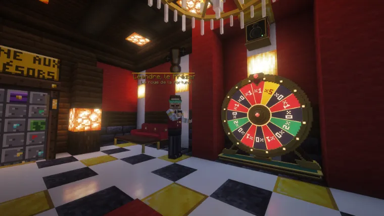
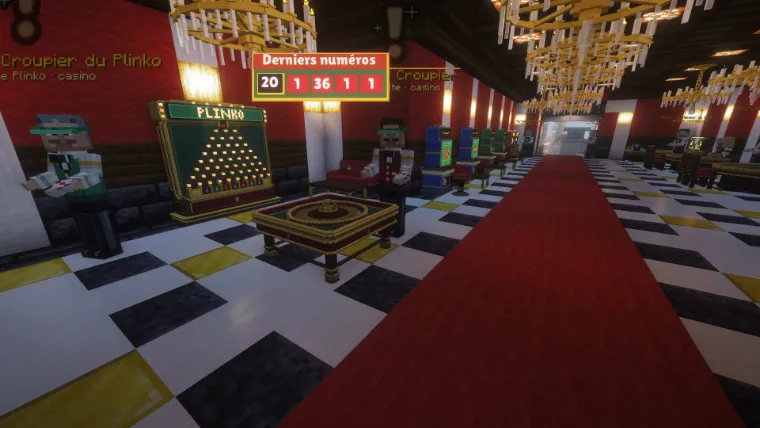
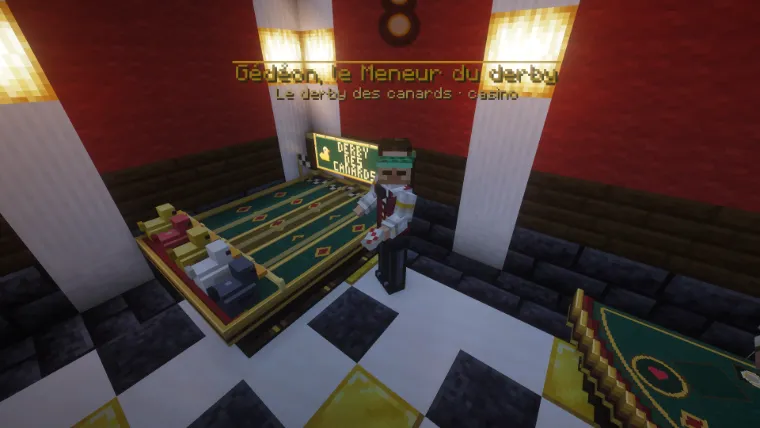
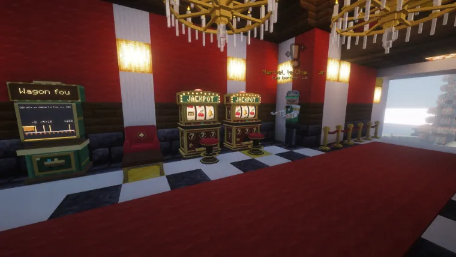
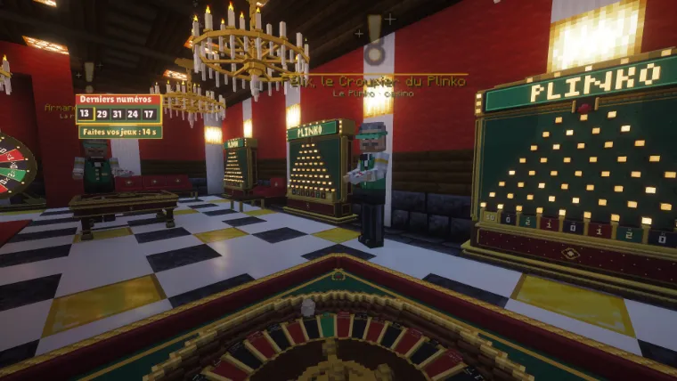
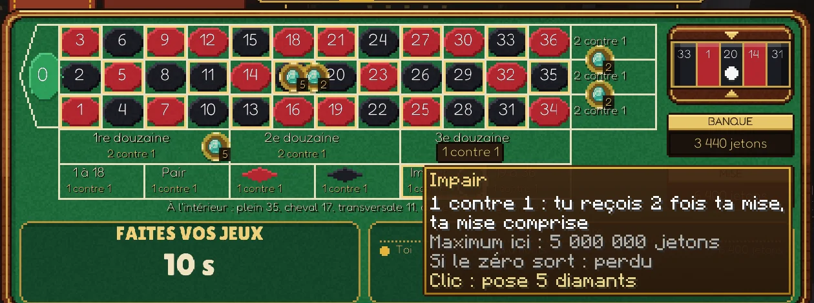
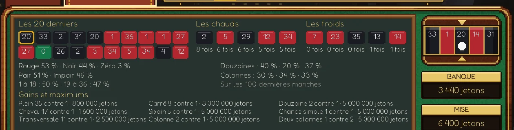
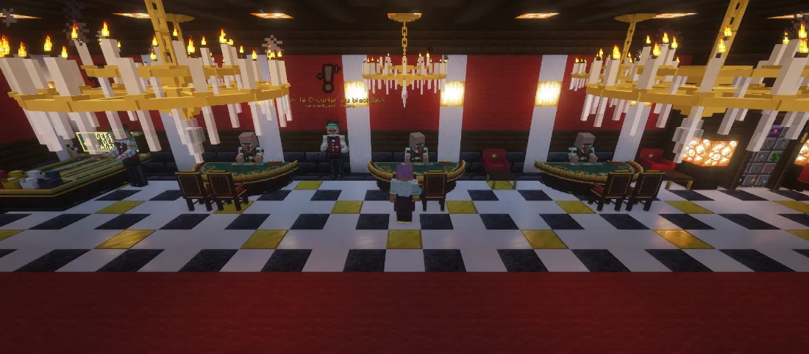

Au palais de Casteria · le casino à minerais
Le casino du palais : mise tes minerais
Neuf jeux sous les lustres, et pas un jeton sur le tapis : ici, on joue ses lingots, ses diamants et ses émeraudes.
La roulette à plusieurs · le blackjack et son double · le gain dans la même matière
Casteria Casino
Ici, la monnaie, ce sont tes minerais
Tu mises ce que tu as tiré de ta Mine et de tes machines. Ce que tu gagnes se paie dans la même matière : un pari en diamants rapporte des diamants.
- Charbon
- Cuivre
- Fer
- Or
- Redstone
- Lapis
- Quartz
- Diamant
- Émeraude
- Netherite
- Castérium
Bruts, en lingots ou en blocs. Le castérium, brut ou en lingot.
64 objets au plus par partie.Le double du blackjack n'y compte pas. 16 pour les blocs de netherite ; à la roulette, 200 par manche.
Ton bilan, jeu par jeu. Dans /profil ; ton plus gros gain d'un coup, au classement « Casino ».





Tout le monde autour du même tapis
Trente-sept numéros, un seul zéro, et les joueurs du palais autour de la table. Elle tourne sans fin : une manche toutes les 33 secondes, 20 pour poser tes minerais sur le tapis (1, 2, 5 ou 10 par clic), puis la bille part pour tous. Chacun ne voit que ses mises. Survole une case : elle dit ce qu'elle paie et son maximum.
- Plein, un seul numéro
- 35 contre 1
- Cheval
- 17 contre 1
- Transversale
- 11 contre 1
- Carré
- 8 contre 1
- Sixain
- 5 contre 1
- Colonne, douzaine
- 2 contre 1
- Deux colonnes, à cheval
- 1 contre 2
- Rouge, noir, pair, impair, 1 à 18, 19 à 36
- 1 contre 1
35 contre 1 : tu reçois 36 fois ta mise, ta mise comprise. Chaque case a son maximum, de 800 000 jetons pour un plein à 5 000 000 pour une chance simple ; par manche, 5 000 000 jetons et 200 objets au plus.
Le croupier annonce chaque manche, à voix haute : « Faites vos jeux » quand les mises s'ouvrent, « Rien ne va plus » quand la bille part. Tu l'entends jusqu'à 16 blocs de la table.




Seul contre le croupier
Trois tables, et à chacune tu joues seul face au croupier, avec tes minerais : le double sur tes deux premières cartes, pris dans ton sac.
- Sur tes deux premières cartes, double ta mise : une seule carte de plus.
- Tu dépasses 21 : tu perds, même si le croupier dépasse aussi.
- Victor, le croupier du blackjack, t'explique le jeu.
- Et il parle comme un villageois : « Hmmm... Faites vos jeux. », puis à la donne, « Heinnn... Les jeux sont faits. »
Et tout le long du tapis rouge
Machines à sous, Plinko, Derby des canards, grande roue, Wagon fou, Plus ou moins et la Mine aux trésors : chacun sa borne, et ses règles se lisent dans son écran.


Une partie gagnée, et parfois un compagnon
Chaque partie gagnée au casino a sa chance de t'offrir un familier qui ne se vend nulle part :
- Le Chat porte-bonheur 3 % par partie gagnée
- La Carpe d'or, la plus rare 0,6 % par partie gagnée
Comme tous les familiers, il te suit partout. Tous les familiers
Personne ne joue sans savoir
Auguste, le Guide du casino, t'accueille à l'entrée : les jeux, ce qu'on y gagne, ce qu'on y perd, ce qui se mise. Armand et Basile tiennent les roulettes, Victor le blackjack, Félix le Plinko, Gédéon le derby, Léandre la roue, et Marcel la machine à sous, le Wagon fou et Plus ou moins.
Comme dans un vrai casino, la maison garde un peu. Au mieux, un jeu rend de 88 à 97 minerais sur 100, et une mise perdue disparaît. Chaque règle qui fait gagner la maison est écrite dans le jeu.